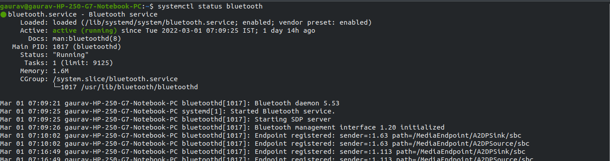
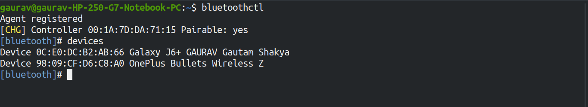
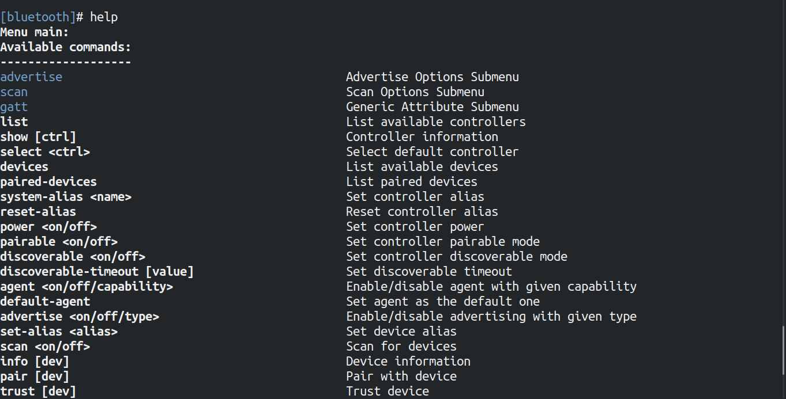

Blogs By Gaurav The Great
How use Bluetooth on linux terminal
First all you have to check whether you buletooth service daemon is running or not. To check run
the command below:
$ sudo systemctl status bluetooth

Now bluetooth service is running. then you use camonnad below to handle the bluetooth operation:
$ bluetoothctl

After firing the buletoothctl command, there are lot of option to use for a specific purpose.To
see all the option type "help" on the terminal an hit enter key.

For example If you want to get the information about the connected ot paired device then fallow
the step below:-

In above example 0C:E0:DC:B2:AB id MAC(media access control) address of the device.
Now you got idea how to use "buletoothctl" command. if you got stuck then you can comment below
i will there for you to help.
Thank you